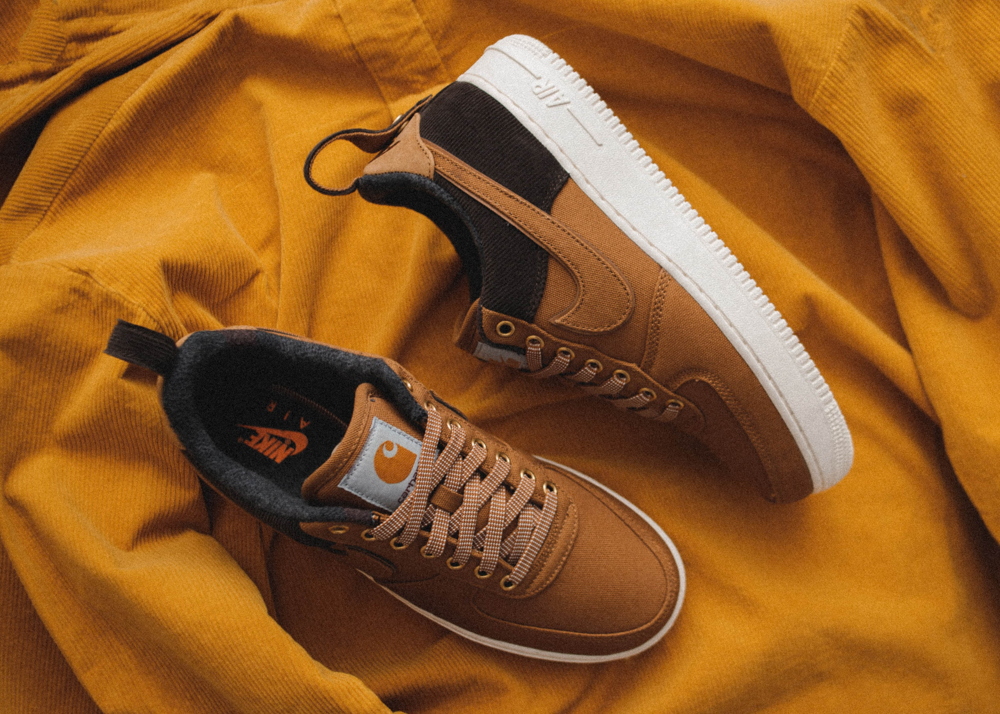

Новая Поставка

Обувь появилась на свет после сделки, заключенной в 1984 году. В то время компания Converse была официальной обувью НБА. Компания сказала ему, что они не могут поставить Джордана выше других спортсменов, которых они спонсировали, включая таких игроков, как Ларри Берд и Мэджик Джонсон, поэтому Джордан решил не сотрудничать с ними. Его любимой обувью в то время была обувь Adidas, но бренд сказал ему, что в то время они просто не могли создать такую обувь. Агент Джордана, Дэвид Фальк, хотел, чтобы он сотрудничал с Nike, которая в то время была известна больше беговой обувью, но Джордана это не интересовало. Тогда Фальк обратился к матери Джордана, Делорис. Моя мама сказала: "Ты пойдешь и послушаешь, тебе может не понравиться, но ты пойдешь и послушаешь", - вспоминает Джордан. Компания Nike предложила ему отличное предложение, неслыханное для новичка, и отец сказал, что надо быть дураком, чтобы не согласиться. Джордан так и сделал. После этого все было направлено на то, чтобы Джордан получил свою собственную обувь.  "Компания Nike только что выпустила новую технологию для своих кроссовок - воздушную подошву", - говорит Фальк. "И очевидно, что Майкл играл в воздухе, поэтому я сказал: "Я понял, мы назовем ее Air Jordan". "Когда мы подписали договор, Nike рассчитывала, что в конце четвертого года они продадут Air Jordans на 3 миллиона долларов", - вспоминает Фальк. "В первый год мы продали 126 миллионов долларов". По легенде, НБА фактически запретила первую версию "Джорданов" Майкла, заявив, что они нарушают правило лиги, согласно которому кроссовки должны быть преимущественно белыми и отражать цвета майки команды. По сообщениям, Джордан был оштрафован на 5 000 долларов за каждую игру в запрещенных кроссовках Air Jordan 1, и компания Nike заплатила штрафы, радуясь тому, что нажилась на рекламе.
Для своей последней игры в Madison Square Garden в качестве игрока "Буллз" Джордан выбрал свои Jordan
1s - первые кроссовки, в которых он играл в MSG, его любимом месте для игры, как он говорит в
документальном фильме. Конечно, все прошло не совсем так, как он надеялся - "к перерыву мои ноги
кровоточили", - говорит Джордан в документальном фильме, признавая, что "инновации приняли долгий
оборот", - но он выстоял.
 Но когда речь зашла о
популярности Air Jordans, остальное уже история. Эта обувь стала обязательным символом статуса в
конце 80-х и в 90-е годы, и сегодня она по-прежнему является основным элементом уличного стиля. Для
ребенка это было почти как обладание световым мечом из "Звездных войн", - объясняет рэпер Нас в
документальном фильме. "Тебе нужна была эта обувь, чтобы быть похожим на него. Это был не просто
символ статуса - вы знали, что этот парень - тот самый парень". Джорданы сделали кроссовки частью
поп-культуры. В настоящее время Air Jordan пережили множество итераций, но Air Jordan 1 остаются
культовыми, поэтому оригинальная версия выпускается и сегодня. А после просмотра фильма "Последний
танец" я официально стал заинтересованным лицом в приобретении собственной пары Jordans.
Но когда речь зашла о
популярности Air Jordans, остальное уже история. Эта обувь стала обязательным символом статуса в
конце 80-х и в 90-е годы, и сегодня она по-прежнему является основным элементом уличного стиля. Для
ребенка это было почти как обладание световым мечом из "Звездных войн", - объясняет рэпер Нас в
документальном фильме. "Тебе нужна была эта обувь, чтобы быть похожим на него. Это был не просто
символ статуса - вы знали, что этот парень - тот самый парень". Джорданы сделали кроссовки частью
поп-культуры. В настоящее время Air Jordan пережили множество итераций, но Air Jordan 1 остаются
культовыми, поэтому оригинальная версия выпускается и сегодня. А после просмотра фильма "Последний
танец" я официально стал заинтересованным лицом в приобретении собственной пары Jordans.